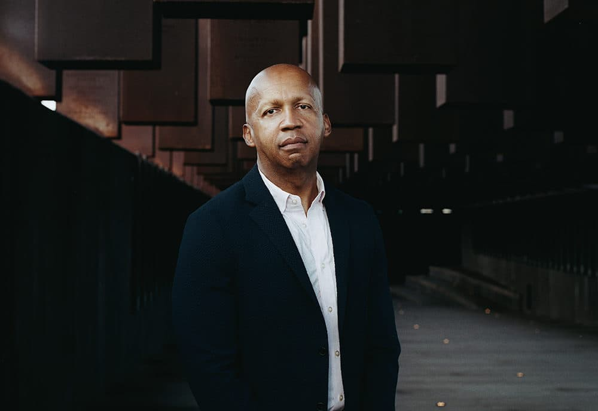

2026.07.09
브라이언 스티븐슨
Bryan Stevenson
사법 시스템이 사람을 사건 번호와 죄명으로 부를 때, 끝까지 그들을 이름으로 불러준 변호사의 생애.
균열이 지나가는 땅에서
1959년 11월 14일, 델라웨어 남부의 작은 마을 밀턴에서 브라이언 앨런 스티븐슨이 태어났다. 아버지 하워드 칼턴 스티븐슨은 이 마을 토박이였고, 어머니 앨리스 거트루드 골든은 필라델피아 출신이었다. 그녀의 집안은 20세기 초 대이주 물결을 타고 버지니아에서 북부로 옮겨온 흑인 가정이었다. 위로 형 하워드 주니어, 아래로 여동생 크리스티가 있었다. 그는 삼남매의 둘째였다.
부모는 둘 다 주 북부까지 일자리를 찾아 통근했다. 아버지는 제너럴 푸드 공장의 실험실 기사, 어머니는 도버 공군기지의 고용평등 담당 사무원이었다. 넉넉한 살림은 아니었지만 어머니는 자식 교육 문제에서만큼은 한 발도 물러서지 않았다.

스티븐슨은 노예의 증손자였다. 유치원과 1학년 때 다닌 학교는 흑인 아이들만 받는 컬러드 초등학교였고, 2학년이 되어서야 통합이 이뤄졌다. 그러나 제도가 바뀐다고 현실까지 바로 바뀌지는 않았다. 흑인 아이와 백인 아이는 여전히 따로 놀았고, 병원에 가도 흑인은 뒷문으로 들어가야 했다. 훗날 그는 이 시절을 두고, 세상 어딘가에 눈에 안 보이는 금이 지나가고 있었고 그 금의 어느 쪽에서 태어났느냐가 사람 인생을 통째로 갈라놓더라는 말을 남겼다.
교회의 노래, 할아버지의 죽음
가족이 다닌 조지타운의 프로스펙트 아프리카 감리교 성공회 교회에서, 어린 브라이언은 피아노를 치고 성가대에서 노래를 불렀다. 이 교회 공동체에는 넘어진 사람이 다시 일어서는 것을 축하하는 정서가 있었다고 한다. 어쩌면 여기서부터였을지 모른다. 누구도 자기가 저지른 최악의 순간 하나로 영원히 규정돼선 안 된다는, 훗날 그의 삶 전체를 관통하게 될 믿음의 첫 씨앗 말이다.
집안의 실질적인 중심은 외할머니였다. 2012년 TED 강연에서 그는 자기 집이 여느 흑인 가정처럼 강인한 여성 어른이 다스리는 집이었고, 그 자리에 외할머니가 있었다고 말했다. 노예였던 부모 밑에서 태어난 분이었다. 여덟아홉 살 무렵의 어느 날, 그는 거실에서 자신을 가만히 바라보던 외할머니에게 손을 붙잡혀 따로 불려갔다. 할머니는 네가 특별하다는 걸 안다, 넌 뭐든 할 수 있는 아이라고 말한 뒤 세 가지만 약속해달라고 했다. 언제나 엄마를 사랑할 것, 옳은 일이 어려운 일일 때도 반드시 옳은 일을 할 것, 그리고 술은 입에 대지 말 것. 아홉 살 소년은 셋 다 그러겠다고 답했다. 훗날 그는 이 약속들이 자신에게 정체성의 힘을 가르쳐 준 첫 경험이었다고 돌아본다.
십 대 시절엔 사법 시스템의 또 다른 얼굴도 마주해야 했다. 외할아버지 클래런스 골든이 필라델피아 자택에서 강도에게 살해당한 것이다. 범인은 결국 붙잡혀 종신형을 받았지만, 스티븐슨은 할아버지가 가난한 흑인이었기에 경찰 수사가 그만큼 절실하지 않았다는 인상을 오래 지우지 못했다. 법 앞에서 누구의 목숨은 더 무겁게, 누구의 목숨은 더 가볍게 다뤄지는지. 그는 이걸 가족의 비극을 통해 먼저 배웠다.
케이프 헨로펜에서 이스턴 대학까지
루이스의 케이프 헨로펜 고등학교 시절, 그는 축구와 야구를 했고 학생회장도 맡았다. 여러 상도 탔다. 1977년 졸업 후엔 펜실베이니아 세인트데이비즈의 이스턴 대학교로 진학해 정치학과 철학을 공부했다. 진보적 신학 색채가 짙은 학교였고, 그는 여기서 신앙과 정의를 바라보는 자기만의 시선을 다듬어 나갔다. 1981년, 철학 학사로 졸업했다.
그해 가을 매사추세츠 케임브리지로 이사해 하버드에 들어갔다. 로스쿨과 케네디 스쿨을 오가는 법학·공공정책 복수학위 과정이었다. 하지만 정작 그의 진로를 결정지은 건 강의실 안이 아니었다.
사형수를 처음 만난 날
로스쿨 2학년, 1983년의 일이다. 그는 조지아 애틀랜타의 남부 재소자 변호 위원회, 지금의 남부 인권 센터에서 인턴십을 시작했고, 여기서 생애 처음으로 사형수를 만났다. 훗날 그는 이 순간을 자기 인생의 전환점으로 꼽곤 했다. 변호를 못 받아 말 그대로 목숨이 위태로운 사람들이 이 나라에 있다는 걸, 그는 그때 처음 몸으로 알았다.
그가 만난 첫 사형수의 이름은 헨리였다. 스물세 살, 변호사 동행도 없이 혼자 조지아 남부 교도소로 차를 몰았던 스티븐슨의 임무는 단순했다. 앞으로 1년 안에는 사형 집행일이 잡히지 않을 거라는 소식을 전하는 것, 딱 그뿐이었다. 한 시간이면 끝날 줄 알았던 면회는 세 시간 넘게 이어졌다. 자신과 비슷한 또래였던 헨리와 그는 가족 이야기, 살아온 이야기를 나눴다.
면회 시간을 한참 넘긴 것에 화가 난 교도관이 들이닥쳐 헨리를 거칠게 결박했다. 스티븐슨이 미안하다고 우물거리자 헨리는 오히려 그를 다독이며 또 오라고 했다. 그러고는 끌려 나가던 발을 문 앞에서 딱 멈춰 세우더니, 눈을 감고 어릴 적 교회에서 들었던 찬송가를 부르기 시작했다. 사슬에 묶인 채 복도를 걸어가면서도 노래는 끊기지 않았다. 스티븐슨은 그 순간을 뜻밖의 선물로 받아들였고, 이 만남이 인간의 존엄과 회복력에 대해 자신이 그때까지 알던 것을 완전히 바꿔놓았다고 회고했다.
하버드를 나오면 대형 로펌에서 훨씬 많이 벌 수 있었다. 주변에서도 다들 그러라고 했다. 그런데 정작 그런 자리에서 자신이 얼마나 열정을 느낄 수 있을지, 스스로도 확신이 안 섰다고 한다. 반면 가난한 피고인과 사형수들 곁에는 이미 뭔가 깊이 얽혀버린 느낌이 있었다. 1985년, 하버드 로스쿨 법학박사와 케네디 스쿨 공공정책 석사를 함께 받은 그는 남부 인권 센터의 정식 변호사로 애틀랜타에 합류해 앨라배마를 맡는다.
이 무렵 그는 연방대법원까지 올라간 매클레스키 대 켐프 사건에도 관여했다. 조지아주 사형 선고에서 인종에 따른 통계적 편향이 확인됐는데도 대법원이 이를 위헌 사유로 받아들이지 않은 사건이다. 스티븐슨에게 이 판결은 사법 시스템 안에 인종주의가 얼마나 깊숙이 박혀 있는지를 보여준, 뼈아픈 패배로 남았다.
몽고메리, 그리고 EJI의 시작
1989년, 남부 인권 센터에 대한 연방 지원금이 끊기면서 조직 전체가 흔들렸다. 스티븐슨은 앨라배마 몽고메리로 거점을 옮겨 앨라배마 사형 대리인 자원 센터를 이끌기 시작한다. 사무 공간부터 구하기 쉽지 않았다. 앨라배마 대학교 로스쿨이 공간을 주겠다 해놓고 말을 바꾼 일도 있었다.
변호사가 아닌 에바 앤슬리가 그와 함께 이 일을 꾸려나갔다. 사형수와 변호인을 연결하고 법률 서비스를 조율하는 실무를 맡은 그녀는 지금도 EJI의 운영 이사로 남아 있다. 몇 해에 걸쳐 조직은 이퀄 저스티스 이니셔티브, 줄여서 EJI로 재편된다. 가난한 이들, 억울하게 유죄를 뒤집어쓴 이들, 정신질환자, 소년일 때 저지른 범죄로 성인과 똑같은 형을 받은 이들을 대리하는 비영리 법률 단체였다.
1995년엔 이른바 천재상이라 불리는 맥아더 펠로십을 받았는데, 상금을 통째로 조직 운영비에 쏟아부어 재정 위기를 넘겼다.
월터 맥밀리언, 세상에 알려진 계기
1986년 11월, 앨라배마주 먼로빌의 세탁소에서 열여덟 살 백인 여성 론다 모리슨이 총에 맞아 숨졌다. 경찰은 몇 달째 실마리를 못 찾았고, 지역 사회의 압박은 점점 커졌다. 이듬해 여름, 전혀 다른 살인 사건으로 조사받던 랠프 마이어스라는 인물이 갑자기 자기도 모리슨 살해에 가담했다면서 흑인 사업가 월터 맥밀리언을 공범으로 지목했다.
맥밀리언에겐 알리바이가 있었다. 사건 당일 교회 사람들과 함께 집에 있었고 이를 증언할 사람도 여럿이었다. 그런데도 그는 이미 지역에서 위험 인물로 낙인찍힌 상태였다. 유색인종인데 자기 사업체를 갖고 있었다는 것, 백인 여성과의 관계가 알려지며 인종의 경계를 넘었다는 것. 그게 이유였다. 1987년 6월 체포, 1988년 8월 재판. 배심원단은 세 시간 심의 끝에 유죄를 평결했다. 종신형을 권고했지만, 재판을 주재한 판사는 이 권고를 뒤집고 사형을 선고해버린다.
스티븐슨이 사건을 맡은 건 1988년이었다. 이후 몇 년간 항소와 청문을 이어갔지만, 압도적인 무죄 증거 앞에서도 법원은 재심을 계속 거부했다. 그는 사건 기록을 새로 확보하고 직접 조사에 나섰다. 핵심 증인이 위증 대가로 돈을 받았다는 재정 기록이 나왔고, 무엇보다 마이어스 본인이 협박 때문에 거짓말을 했다며 진술을 뒤집겠다고 나섰다. 녹음테이프 뒷면에서는 마이어스가 그 사람을 모른다며 진술을 강요당하고 있다고 항변하는 목소리까지 발견됐다.
스티븐슨은 맥밀리언의 가족을 찾아갔다. 훗날 그는 이 만남에서 근접성이라는 개념을 배웠다고 말한다. 고통받는 사람 가까이 다가가지 않고서는 그 상황을 이해할 수 없다는 믿음이다. 판자와 시멘트 벽돌로 겨우 지탱된 집, 페인트가 벗겨진 창틀, 마당에 흩어진 자동차 부품들. 그는 이 가난의 풍경 한복판에서, 한 사람이 어떻게 억울하게 죽음의 문턱까지 밀려날 수 있는지를 직접 목격했다.
1993년, 검찰은 결국 모든 증거가 맥밀리언의 무죄를 가리킨다고 인정했다. 법원은 유죄 판결을 무효화했고, 월터 맥밀리언은 6년의 사형수 생활 끝에 풀려났다. 하지만 그 6년의 무게는 사라지지 않았다. 그는 이후 외상성 치매를 앓았고, 죽는 날까지 사형장의 환영에 시달렸다고 스티븐슨은 회고한다. 2013년 그가 세상을 떠났을 때, 스티븐슨은 장례식에서 직접 추도사를 읽었다.
아이들을 죽음에서 구하다
스티븐슨과 EJI가 힘을 쏟은 또 다른 전선은 소년범 문제였다. 열여덟 살이 되기 전 저지른 범죄로 사형이나 가석방 없는 종신형을 선고받은 아이들. 이 사건들을 그는 연방대법원까지 끌고 갔다.
2005년 로퍼 대 시먼스 판결에서 대법원은 미성년자 사형이 위헌이라고 판단했다. 2012년, 스티븐슨이 직접 변론한 밀러 대 앨라배마 사건에서는 아이들에게 자동으로 가석방 없는 종신형을 매기는 것도 수정헌법 8조가 금지하는 잔혹하고 이례적인 형벌이라는 판결이 나왔다. 2016년 몽고메리 대 루이지애나 판결은 이 원칙을 이미 그런 형을 받고 복역 중이던 사람들에게까지 소급 적용하도록 했다. 이 세 판결은 그가 오래 주장해온 원칙, 아직 자라는 중인 아이는 최악의 순간 하나로 영원히 규정돼선 안 된다는 믿음을 미국 헌법 해석 안에 새겨 넣은 사건들이었다.
2019년에도 대법원에서 이겼다. 치매를 앓는 사형수의 처형을 다투는 사건이었다. 여기에 더해 스티븐슨과 EJI는 140명 넘는 사형수의 유죄 판결을 뒤집거나 감형·석방을 이끌어냈고, 부당하게 유죄를 받거나 과도한 형을 받은 수백 명을 도왔다.
『저스트 머시』, 책이 된 30년
2014년, 스티븐슨은 지난 30년을 정리한 회고록 『저스트 머시: 정의와 구원의 이야기』를 펴낸다. 월터 맥밀리언의 이야기를 중심에 두되, 소년범 종신형 문제와 정신질환 수감자들, 그 밖의 소외된 의뢰인들의 이야기를 함께 엮었다. 정의와 자비가 서로 대립하는 가치가 아니라는 메시지를 담아 고른 제목이었다.
이 책은 『뉴욕타임스』 베스트셀러 목록에 230주 넘게 이름을 올렸다. 2015년엔 앤드루 카네기 메달, 데이턴 문학 평화상, NAACP 이미지 어워드를 받았고, 2019년에는 마이클 B. 조던이 스티븐슨을, 제이미 폭스가 월터 맥밀리언을 연기한 동명 영화로도 만들어져 개봉했다. 국내에는 2016년 열린책들에서 고기탁 번역으로 『월터가 나에게 가르쳐 준 것』이라는 제목으로 소개됐다.
기억을 짓다
법정 승리만으로는 부족하다는 자각이 어느 순간 그 안에서 자라났다. 남아프리카공화국의 아파르트헤이트 박물관, 독일의 홀로코스트 기념관을 둘러보며 그는 미국에는 노예제와 인종 폭력의 역사를 정직하게 마주하는 문화 공간이 없다는 사실을 절감했다고 한다. 2013년, EJI는 몽고메리 시내에 과거 노예 거래가 이뤄지던 자리를 표시하는 역사 표지판을 세우려 했지만, 앨라배마 역사협회는 논란의 소지가 있다며 후원을 거절했다. 그래도 그는 표지판을 세웠고, 지역 사회의 반응은 그가 예상했던 것보다 훨씬 뜨거웠다.
2018년 4월 26일, EJI는 두 공간을 한꺼번에 열었다. 하나는 노예제부터 대량 수감 사태까지 미국사를 훑는 레거시 뮤지엄, 다른 하나는 국립 평화정의기념관이었다. 기념관에는 1877년부터 1950년까지 남부 열두 개 주에서 벌어진 4천 건이 넘는 린칭의 기록을 바탕으로, 800개가 넘는 강판 기둥이 천장에 매달려 있다. 기둥 하나가 린칭이 일어난 카운티 하나를 대표하고, 그 위에 희생자들의 이름이 새겨져 있다. 이름조차 알 수 없는 희생자들도 잊히지 않도록 자리를 얻었다.
두 시설을 짓는 데 2천만 달러 넘는 민간 기부금이 들었다. EJI는 지금까지도 이 사업들에 주 정부나 연방정부 자금을 단 한 푼도 받지 않았다는 사실을 강조해왔다. 진실을 말할 자유를 지키기 위해서라는 게 스티븐슨의 설명이다.
2024년 6월엔 앨라배마강을 굽어보는 17에이커 부지에 프리덤 모뉴먼트 조각공원을 새로 열었다. 이곳 중심에는 1870년 인구조사에 기록된 약 500만 흑인의 성 12만 2천 개를 새긴 4층 높이의 자유의 국립 기념비가 서 있다. 스티븐슨은 이 공간이 고통의 기록에만 머물지 않고, 노예였던 이들이 지켜낸 인내와 사랑, 그 후손들이 물려받은 희망까지 함께 증언하길 바랐다고 말했다.
가장 최근인 2026년 3월 6일에는 몽고메리 스퀘어가 문을 열었다. 1955년 몽고메리 버스 보이콧부터 1965년 셀마-몽고메리 행진까지, 그가 세상을 바꾼 몽고메리의 10년이라 부르는 시기를 다루는 공간이다. 셀마에서 몽고메리까지 이어진 행진의 마지막 구간이었던 거리 바로 옆에 자리한 이곳에서, 스티븐슨은 개관식 날 새로운 프로젝트 하나를 발표했다. 1955년부터 1965년까지 몽고메리 지역에 살며 그 시절을 몸으로 겪은 주민들의 육성 증언을 영상으로 기록하는 몽고메리 메모리 프로젝트였다. 그는 이 자리에서 책을 금지하고 역사를 지우려는 최근의 흐름을 언급하며, 몽고메리가 다시 한번 안 된다고 말할 수 있는 공동체가 되어야 한다고 말했다.
검소한 삶, 홀로 걷는 길
스티븐슨은 평생 결혼하지 않았다. 자신이 택한 일의 강도가 결혼 생활과 양립하기 어렵다고 그는 여러 차례 밝혀왔다. 1985년 몽고메리에 정착한 이래 줄곧 그 도시에서 살았다. 한때는 방 하나짜리 아파트에 살며 낡은 1988년형 코롤라를 몰았고, EJI에서 자신의 연봉을 직원 30여 명보다 낮게 책정해왔다고 알려져 있다.
1998년부터는 뉴욕대 로스쿨 임상 교수진에 합류해 지금까지 강단에 서고 있고, 하버드·예일·미시간 로스쿨에서도 강의한 적이 있다. 러시아 옐친 정권 시기엔 현지 입법자들과 협력해 800건의 사형을 감형으로 이끄는 데 힘을 보탰고, 동유럽과 카리브해 지역 법률가들과도 사형 폐지를 위해 함께 일해왔다.
그가 남긴 말
2012년 TED 강연 「우리는 불의에 대해 이야기해야 합니다」에서 그는 한 사회의 품격은 부유한 이들이 아니라 가난한 자, 유죄를 선고받은 자, 수감된 자를 어떻게 대하는가로 판가름 난다고 말했다. 이 강연이 그를 대중에게 널리 알린 계기였고, 훗날 회고록을 쓰게 된 직접적인 발단이기도 했다.
그가 즐겨 인용하는 문장, “우리 각자는 자신이 저지른 가장 나쁜 일보다 더 큰 존재다”는 원래 사형 폐지 운동가 헬렌 프리진 수녀에게서 빌려온 말이다. 하지만 스티븐슨은 이 문장을 자기 실무 철학의 핵심으로 끌어안았다. 자신이 대변하는 사람들을 이해하려면 무엇보다 그들이 어떻게 부서졌는가를 알아야 한다고 그는 말해왔다. 심판하기 전에 먼저 다가갈 것. 그것이 그가 말하는 근접성의 윤리였다.
사형제도를 이야기할 때 그는 질문 자체를 바꿔놓는다. 어떤 죄를 지은 사람이 죽어 마땅한가를 묻는 대신, 우리에게 누군가를 죽일 자격이 있는가를 물어야 한다는 것이다. 이 질문 하나로 그는 처벌의 초점을 죄를 지은 개인에게서, 그 죄인을 심판하는 우리 자신에게로 옮겨놓는다.
인정과 유산
1991년 ACLU 국가 자유 메달, 1995년 맥아더 펠로십, 2000년 올로프 팔메상, 2009년 그루버 정의상, 2011년 루스벨트 연구소의 공포로부터의 자유 상, 2018년 미국철학회 벤저민 프랭클린상, 2020년 나스린 소투데 등과 공동 수상한 라이트 라이블리후드상, 2021년 국립 인문학 메달까지. 그가 받은 상은 헤아리기 어려울 정도다. 2015년엔 『타임』이 선정한 가장 영향력 있는 인물 100인에 이름을 올렸고, 2024년엔 미국철학회 회원으로 선출됐다. 2025년엔 버지니아 대학교와 토머스 제퍼슨 재단이 수여하는 토머스 제퍼슨 시민 리더십 메달을 받았다.
2024년 8월, 그의 사촌이자 교육자인 알로나 베리는 델라웨어주 조지타운에 그의 이름을 딴 무료 공립 차터스쿨 브라이언 앨런 스티븐슨 우수학교를 세웠다. 스티븐슨은 이 학교에 10만 달러를 기부했다. 어린 시절 통합 이전의 컬러드 초등학교를 다녀야 했던 소년이, 반세기가 지나 고향 마을에 자기 이름을 건 학교를 세우는 데 힘을 보탠 셈이다.
이름을 부르는 일
브라이언 스티븐슨의 삶을 관통하는 질문이 하나 있다면 이것일 것이다. 한 사람을 그가 저지른 가장 나쁜 순간으로만 정의할 것인가, 아니면 그 사람 전체로 바라볼 것인가. 델라웨어의 분리된 교실에서 시작해 앨라배마 사형장 앞을 가장 많이 서본 변호사가 되기까지, 그는 이 질문을 법정에, 책에, 기념관에, 조각공원에 계속 새겨 넣었다.
그는 아마 승소한 판결의 숫자로 기억되길 바라지 않았을 것이다. 그가 지키려 한 건 훨씬 단순한 무엇이었다. 죄명이 아니라 이름으로, 사건 번호가 아니라 얼굴로 사람을 기억하는 일. 그게 그가 어릴 적부터 지금까지 걸어온 길의 이름이다.
한국어 번역서에 관하여
브라이언 스티븐슨의 『Just Mercy: A Story of Justice and Redemption』는 국내에 『월터가 나에게 가르쳐 준 것』이라는 제목으로 소개되었다. 열린책들에서 고기탁 번역으로 2016년 출간된 판본을 확인할 수 있다.
더 읽을 자료
- EJI의 브라이언 스티븐슨 공식 소개
EJI 설립, 연방대법원 사건, 사형수 변론, 레거시 사이트 조성까지 그의 활동 전반을 확인할 수 있다. - 『Just Mercy』 공식 사이트
월터 맥밀리언 사건, 책과 영화, EJI가 대리한 의뢰인들의 이야기를 함께 볼 수 있다. - 레거시 뮤지엄
노예제, 인종 테러, 대량 수감으로 이어지는 미국 인종 불의의 역사를 다루는 EJI의 공간이다. - 국립 평화정의기념관
린칭 희생자들의 이름과 장소를 공적 기억으로 세운 기념관이다. - TED 강연, “We Need to Talk About an Injustice”
스티븐슨이 정체성, 빈곤, 인종, 처벌의 문제를 대중에게 널리 알린 강연이다.